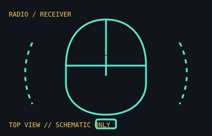

[ MICE AND TRACKBALLS // IDENTIFIED COMPONENT ]
Logitech G PRO X SUPERLIGHT
First-generation, rechargeable LIGHTSPEED esports mouse introduced in 2020. This entry is distinct from the later PRO X SUPERLIGHT 2.

MODEL IDENTIFICATION: Logitech part number 910-005878 identifies the black first-generation model in the cited regional catalog. Confirm color, regional suffix, receiver, and the underside label before matching a unit.
Recorded specifications
| Cataloged part | Logitech G PRO X SUPERLIGHT, first generation; P/N 910-005878 (black SKU) |
|---|---|
| Sensor | HERO 25K optical sensor; manufacturer lists up to 25,600 DPI. |
| Connection / power | LIGHTSPEED 2.4 GHz wireless receiver; rechargeable internal battery, up to 70 hours per Logitech's launch specification. |
| Mass / controls | Less than 63 g; five programmable buttons. Manufacturer's weight excludes cable and receiver. |
| Generation distinction | This 2020 model uses HERO 25K and micro-USB charging; PRO X SUPERLIGHT 2 is a separate later design with different sensor, switches, and USB-C. |
Compatibility and handling
- Use the included LIGHTSPEED receiver or a supported replacement; charging/data cable connection is not a wired mouse mode for normal pointing.
- Logitech G HUB is used for advanced button and profile configuration; basic pointer operation depends on host OS support for a standard USB mouse.
- Battery-life claims are manufacturer estimates and vary with use, settings, battery age, and radio conditions.
- Keep the receiver with the mouse and record its identity; do not confuse it with a Unifying or Logi Bolt receiver.
Manufacturer sources
- Logitech G — PRO X SUPERLIGHT product / support pageModel family and support entry; verify regional SKU and charging details against the label/manual.
- Logitech — 2020 PRO X SUPERLIGHT launch specificationsManufacturer announcement for HERO 25K, LIGHTSPEED, mass, and published battery estimate.